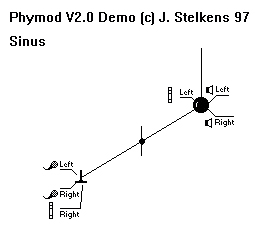
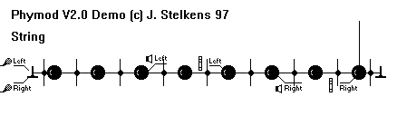
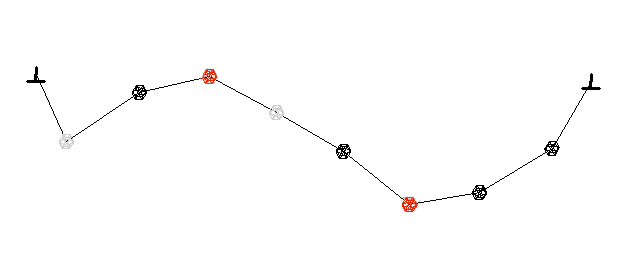
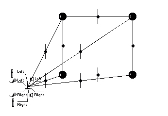

The next set of orquestras are based on the documentation included in the freely available Demo-version of PhyMod V2.0., a nice program to design physical models simply by linking masses in a graphical environment. In fact I liked so much the simplicity of the approach that I decided to port some instruments to Csound. Thus, though the powerful graphycal interface is lost (and the ease to make complex structures without virtually any effort), you can use the designs directly to make music, and not only to generate sound samples. You can always make the design quickly with PhyMod, test it and, if you like the sound obtained, code it to Csound.
The instruments included here should help you to do it.
You should find PhyMod at http://141.84.217.141/phymod , though I´m afraid it is no longer available.
You are warned, though. Don´t expect the elegance and computational efficiency of Waveguide synthesis here. The models compile incredibly slowly, and the implementation is extremely crude.
The term physical modeling is applied liberally to all the hardware or software devoted to the simulation of mechanical events, however elegantly or inelegantly this is achieved.
(From PhyMod manual)
Here the implementation is rather basic. Next is a summary of the Principles in the help file of PhyMod. Consider a mass m tied to a spring whose damping is z and whose restoring force is k. The sum of all forces must be zero, then we have
Force of inertia + Restoring force + Friction force = 0
-mx´´-kx - zx´ = 0 (x being the displacement)
x´´+(k/m)x+(z/m)x´= 0 being w=sqrt(k/m) = oscil. frequency
then of course x´´= -F/m
To discretize the system, let´s suppose sr<<w and then the following approximations are reasonable
x ~ x(n)
x´~ x(n)-x(n-1)
x´´~ x(n)-2x(n-1)-x(n-2)
Then, for example, after some substitutions you get
(for 2 masses m1 and m2 , tied with a string; force from mass 2 to mass 1)
F1(n) = k(x2-x1) +z(x2(n)-x2(n-1)-x1(n)-x1(n-1)) = -F2(n)
x1(n+1) = F1(n)/m1 + 2x(n-2) -x(n-1)
To sum up, you must calculate all the forces that act on masses, summate them and then use the forces to calculate
the new positions x(n+1) for every mass. If you don´t see clearly how the stuff works, please look at PhyMod help.
In the simplest cases (dealing with 1 or 2 masses only) a direct implementation will be enough. For an arbitrary number of masses in a simple relationship (a string or a plate), I used the zak system to allocate all the variables needed (previous, actual and next positions of masses and actual forces, so you´ll need 4*n variables, being n the number of masses in the system). However, for arbitrarily complex structures the necessarily direct implementation can lead to an incredibly messy code. Anyway, some designs are a good practice to get used to the new zak opcodes.

A damped sine wave can be generated simply by linking a mass with some energy (initial position and/or velocity different from 0) to the ground. The ground is effectively considered as an infinite mass, and keeps the system from becoming unstable. You can choose the initial position to be 0 (but some initial velocity) to avoid that click at the beginning. The first 5 notes show the effect of varying the damping, the 5 next show how varying the restoring force k leads to different vibration frequencies. This could also be done with a different mass. In real string instruments a combination of different linear density (mass) and tension (k) is normally used, and fine tuning is done with slight adjustements of k.
Notice also that this is a way to obtain extremely pure sine waves without table look-up. It is slower but much better, specially at low frequencies.
The next example is very similar to the previous one, except that here we have 2 identical masses, one tied to the other and the second one grounded. The sound has now 2 main frequencies (it may be easy to predict them exactly).
Two masses linked, and each one respectively grounded can be seen as an oversimplification of a real plucked string tied at both ends, like the real ones. Don´t expect a plucked string sound, though. It is more similar to a hammered metallic bar (?)

After hearing the previous instrument, I thought what would happen if the number of masses of the simulated string was enough large. Maybe the resulting sound could approach more convincingly that of an ideal string. The instrument makes use of the zak system and, for simplicity, I initialized all the positions to 0 except for one mass. This should be like plucking the string at that point. You could even simulate the pluck and pick-up positions, though I´ve not implemented this possibility. The instrument sets a rich pattern of vibrations, and sounds cool at low damping values.
A problem in the design of the instrument was to clear the zak space at init time, because the values are otherwise kept from note to note. The opcode that should do this, zicl, doesn´t exist yet. I wasn´t sure if igoto + zkcl worked okay for this purpose. So (forgive me) I clear manually the zak space with a second instrument between notes. Other tricks like this could work as well. In particular I thing it would be very elegant to activate an intermediate instrument which could clear the zak space, pick up all the p-fields and store them as global variables, activate a second instrument with the string model via turnon which would pick up those global variables and then quit (turnoff), like
instr 1
gip3 = p3; and all the remaining fields
;here clear the zak space (zkcl)
turnon 2,0; trigger instr 2
turnoff; then quit
endin
instr 2
p3 = gip3
;all the stuff here
endin
but it seems more difficult in practice. However, you can keep the mass distribution at your own risk, that would be more physical maybe.
Forget to use this instrument in polyphonic works, because the zak system would interfere completely, unless you reserve different locations for each overlapped note.

Now suppose the string has a non uniform lynear density, which can be simulated simply by setting arbitrary values from a table to the masses of the system. The same thing can be done initialising the positions to some values derived from another table, something like the Karplus-Strong algorithm, but here with a brute-force method. This is by far one of the most complex instruments I´ve ever written. Notice that, though richly inharmonic, the timbre obtained is perfectly bandlimited, because there aren´t non-linearities in the system.
pm5.mp3 : just with arbitrary initial positions
pm5b.mp3 : also with arbitrary masses (this is what you´ll get compiling pm5)
(both rendered at 44100 Hz and then compressed to mpeg layer 3)

Let´s try now a different configuration of the masses. In the next dessign I used a plate structure (see fig.). The same could be done with an arbitrary number of masses but it could be too complicated. The sound can range from drum to bells like timbres very convincing.
We can introduce some non-linearities in the system to get a richer sound. What in PhyMod is called a simulation of hammer action is merely a conditional statement which bypasses the link (that is, considers two masses phisically independent) when the position of one mass becomes higher (or lower) than the adjacent one. This is supposed to emulate a structure (periodically?) struck (?). Of course introducing a conditional statement causes the generation of massive inharmonic components even in a very simple structure. This is just what I was looking for...
Like the previous one but using the string structure of pm5. Cool sound.
Much more interesting than simulating instruments that have worked perfectly well for tens or even hundreds of years is to play around with the parameter sets to create instruments that no one has ever heard before. (From PhyMod manual)
Could be true. In fact the sounds I got from those designs are certainly realistic, but I didn´t expect that sometimes metallic quality. May be the result of an oversimplification of the problem, or maybe a complete erroneus formulation, it doen´t matter. They are wonderful sounds. Very physical ;-) .
Josep M Comajuncosas
gelida@intercom.es